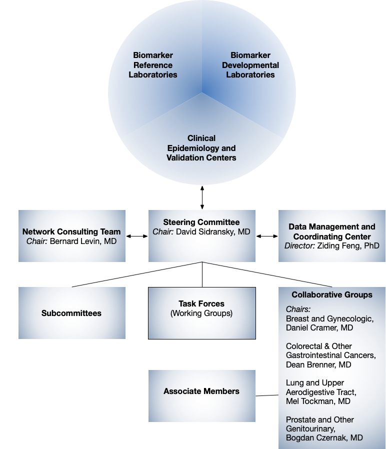

The Early Detection Research Network (EDRN), an initatve of the National Cancer Institute (NCI), brings together dozens of institutions to help accelerate the translation of biomarker information into clinical applications and to evaluate new ways of testng cancer in its earliest stages and for cancer risk.
The components and projects that comprise the Early Detection Research Network include:
- Biomarker Development Laboratories
- Responsible for the development and characterization of new biomarkers or the refinement of existing biomarkers.
- Biomarker Reference Laboratories
- Serve as a network resource for clinical and laboratory validation of biomarkers, which includes technological development, quality control, refinement, and high throughput.
- Clinical Validation Centers
- Conduct clinical and epidemiological research regarding the clinical application of biomarkers.
- Data Management and Coordinating Center
- Coordinates the EDRN research actvites, providing logistic support, and conductng statistical and computational research for data analysis, analyzing data for validation. It's also responsible for EDRN common database development.
- Informatics Center
- The Informatics Center pioneers the cyberinfrastructure for EDRN by developing cutting-edge systems in artificial intelligence and data science. These systems support the federation of data, information, and knowledge throughout EDRN for rapid scientific discovery. The center is at the Jet Propulsion Laboratory, operated by the California Institute of Technology for the National Aeronautics and Space Administration.
- Groups and Committes
- Where the pioneering research of EDRN gets carried out.
🏆 Our Accomplishments
The objectives of EDRN include:
- Development and testing of promising biomarkers or technologies for early detection of cancer
- Evaluation of promising, analytically proven biomarkers or technologies
- Collaboration among academic and industrial leaders in molecular biology, molecular genemics, clinical oncology, computer science, public health and clinical application for early cancer detection
- Collaboration and rapid dissemination of information among awardees
